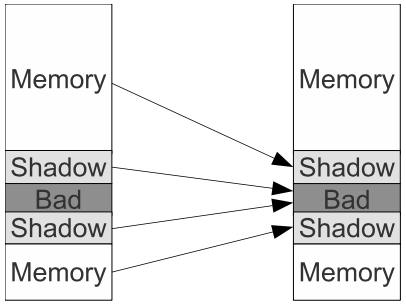
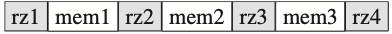

<!DOCTYPE html>
<html lang="en">
<head>
  <meta charset="UTF-8">
<meta name="viewport" content="width=device-width">
<meta name="theme-color" content="#222" media="(prefers-color-scheme: light)">
<meta name="theme-color" content="#222" media="(prefers-color-scheme: dark)">
<meta name="generator" content="Hexo 6.3.0">

<link rel="preconnect" href="https://fonts.googleapis.com" crossorigin>
<link rel="preconnect" href="https://cdn.jsdelivr.net" crossorigin>
  <link rel="apple-touch-icon" sizes="180x180" href="/en/images/apple-touch-icon-next.png">
  <link rel="icon" type="image/png" sizes="32x32" href="/en/images/favicon-32x32-next.png">
  <link rel="icon" type="image/png" sizes="16x16" href="/en/images/favicon-16x16-next.png">
  <link rel="mask-icon" href="/en/images/logo.svg" color="#222">
  <meta name="google-site-verification" content="piAnQ_mnwkhV_qh4_Se1yLzM1IwOvuq-vmYfXBkWRXU">

<link rel="stylesheet" href="/en/css/main.css">

<link rel="stylesheet" href="https://fonts.googleapis.com/css?family=EB+Garamond:300,300italic,400,400italic,700,700italic%7CNoto+Serif+SC:300,300italic,400,400italic,700,700italic%7CRoboto+Mono:300,300italic,400,400italic,700,700italic&display=swap&subset=latin,latin-ext">

<link rel="stylesheet" href="https://cdn.jsdelivr.net/npm/@fortawesome/fontawesome-free@5.15.4/css/all.min.css" integrity="sha256-mUZM63G8m73Mcidfrv5E+Y61y7a12O5mW4ezU3bxqW4=" crossorigin="anonymous">
  <link rel="stylesheet" href="https://cdn.jsdelivr.net/npm/animate.css@3.1.1/animate.min.css" integrity="sha256-PR7ttpcvz8qrF57fur/yAx1qXMFJeJFiA6pSzWi0OIE=" crossorigin="anonymous">
  <link rel="stylesheet" href="https://cdn.jsdelivr.net/npm/@fancyapps/fancybox@3.5.7/dist/jquery.fancybox.min.css" integrity="sha256-Vzbj7sDDS/woiFS3uNKo8eIuni59rjyNGtXfstRzStA=" crossorigin="anonymous">

<script class="next-config" data-name="main" type="application/json">{"hostname":"www.packetmania.net","root":"/en/","images":"/en/images","scheme":"Gemini","darkmode":true,"version":"8.8.2","exturl":false,"sidebar":{"position":"left","display":"post","padding":18,"offset":12},"copycode":true,"bookmark":{"enable":true,"color":"#222","save":"auto"},"mediumzoom":false,"lazyload":false,"pangu":false,"comments":{"style":"tabs","active":"gitalk | utterances | disqus","storage":true,"lazyload":false,"nav":{"disqus":{"text":"Disqus Comments","order":-1},"utterances":{"text":"Utterances Comments","order":-2},"gitalk":{"text":"Gitalk Comments","order":-3}}},"stickytabs":false,"motion":{"enable":true,"async":false,"transition":{"post_block":"fadeIn","post_header":"fadeInDown","post_body":"fadeInDown","coll_header":"fadeInLeft","sidebar":"fadeInUp"}},"prism":false,"i18n":{"placeholder":"Searching...","empty":"We didn't find any results for the search: ${query}","hits_time":"${hits} results found in ${time} ms","hits":"${hits} results found"},"path":"/en/search.json","localsearch":{"enable":true,"trigger":"auto","top_n_per_article":1,"unescape":false,"preload":false}}</script><script src="/en/js/config.js"></script>
<meta name="description" content="Memory access errors are the most common software errors that often cause program crashes. The AddressSanitizer tool, developed by Google engineers in 2012, has become the first choice of C&#x2F;C++ progra">
<meta property="og:type" content="article">
<meta property="og:title" content="AddressSanitizer - A Tool for Programmers to Detect Memory Access Errors">
<meta property="og:url" content="https://www.packetmania.net/en/2022/04/22/ASAN-intro/index.html">
<meta property="og:site_name" content="PacketMania">
<meta property="og:description" content="Memory access errors are the most common software errors that often cause program crashes. The AddressSanitizer tool, developed by Google engineers in 2012, has become the first choice of C&#x2F;C++ progra">
<meta property="og:locale" content="en_US">
<meta property="og:image" content="https://www.packetmania.net/en/2022/04/22/ASAN-intro/asan-mm.png">
<meta property="og:image" content="https://www.packetmania.net/en/2022/04/22/ASAN-intro/asan-redzone.png">
<meta property="article:published_time" content="2022-04-23T05:35:17.000Z">
<meta property="article:modified_time" content="2022-04-24T02:00:35.349Z">
<meta property="article:author" content="Zixi">
<meta property="article:tag" content="C&#x2F;C++ Programming">
<meta property="article:tag" content="System Programming">
<meta name="twitter:card" content="summary">
<meta name="twitter:image" content="https://www.packetmania.net/en/2022/04/22/ASAN-intro/asan-mm.png">


<link rel="canonical" href="https://www.packetmania.net/en/2022/04/22/ASAN-intro/">


<script class="next-config" data-name="page" type="application/json">{"sidebar":"","isHome":false,"isPost":true,"lang":"en","comments":true,"permalink":"https://www.packetmania.net/en/2022/04/22/ASAN-intro/","path":"2022/04/22/ASAN-intro/","title":"AddressSanitizer - A Tool for Programmers to Detect Memory Access Errors"}</script>

<script class="next-config" data-name="calendar" type="application/json">""</script>
<title>AddressSanitizer - A Tool for Programmers to Detect Memory Access Errors | PacketMania</title>
  
    <script async src="https://www.googletagmanager.com/gtag/js?id=G-9YKBP0QK7Z"></script>
  <script class="next-config" data-name="google_analytics" type="application/json">{"tracking_id":"G-9YKBP0QK7Z","only_pageview":false}</script>
  <script src="/en/js/third-party/analytics/google-analytics.js"></script>


  <noscript>
    <link rel="stylesheet" href="/en/css/noscript.css">
  </noscript>
<link rel="alternate" href="/en/atom.xml" title="PacketMania" type="application/atom+xml">
</head>

<body itemscope itemtype="http://schema.org/WebPage" class="use-motion">
  <div class="headband"></div>

  <main class="main">
    <header class="header" itemscope itemtype="http://schema.org/WPHeader">
      <div class="header-inner"><div class="site-brand-container">
  <div class="site-nav-toggle">
    <div class="toggle" aria-label="Toggle navigation bar" role="button">
        <span class="toggle-line"></span>
        <span class="toggle-line"></span>
        <span class="toggle-line"></span>
    </div>
  </div>

  <div class="site-meta">

    <a href="/en/" class="brand" rel="start">
      <i class="logo-line"></i>
      <p class="site-title">PacketMania</p>
      <i class="logo-line"></i>
    </a>
      <p class="site-subtitle" itemprop="description">Technology | Knowledge | Sharing</p>
  </div>

  <div class="site-nav-right">
    <div class="toggle popup-trigger">
        <i class="fa fa-search fa-fw fa-lg"></i>
    </div>
  </div>
</div>


<nav class="site-nav">
  <ul class="main-menu menu">
        <li class="menu-item menu-item-home"><a href="/en/" rel="section"><i class="fa fa-home fa-fw"></i>Home</a></li>
        <li class="menu-item menu-item-tags"><a href="/en/tags/" rel="section"><i class="fa fa-tags fa-fw"></i>Tags</a></li>
        <li class="menu-item menu-item-categories"><a href="/en/categories/" rel="section"><i class="fa fa-th fa-fw"></i>Categories</a></li>
        <li class="menu-item menu-item-archives"><a href="/en/archives/" rel="section"><i class="fa fa-archive fa-fw"></i>Archives</a></li>
        <li class="menu-item menu-item-sitemap"><a href="/en/sitemap.xml" rel="section"><i class="fa fa-sitemap fa-fw"></i>Sitemap</a></li>
        <li class="menu-item menu-item-rss"><a href="/en/atom.xml" rel="section"><i class="fa fa-rss fa-fw"></i>RSS</a></li>
        <li class="menu-item menu-item-language"><a href="https://www.packetmania.net/" rel="section"><i class="fa fa-language fa-fw"></i>中文</a></li>
      <li class="menu-item menu-item-search">
        <a role="button" class="popup-trigger"><i class="fa fa-search fa-fw"></i>Search
        </a>
      </li>
  </ul>
</nav>


  <div class="search-pop-overlay">
    <div class="popup search-popup"><div class="search-header">
  <span class="search-icon">
    <i class="fa fa-search"></i>
  </span>
  <div class="search-input-container">
    <input autocomplete="off" autocapitalize="off" maxlength="80"
           placeholder="Searching..." spellcheck="false"
           type="search" class="search-input">
  </div>
  <span class="popup-btn-close" role="button">
    <i class="fa fa-times-circle"></i>
  </span>
</div>
<div class="search-result-container no-result">
  <div class="search-result-icon">
    <i class="fa fa-spinner fa-pulse fa-5x"></i>
  </div>
</div>

    </div>
  </div>

</div>
        
  
  <div class="toggle sidebar-toggle" role="button">
    <span class="toggle-line"></span>
    <span class="toggle-line"></span>
    <span class="toggle-line"></span>
  </div>

  <aside class="sidebar">

    <div class="sidebar-inner sidebar-nav-active sidebar-toc-active">
      <ul class="sidebar-nav">
        <li class="sidebar-nav-toc">
          Table of Contents
        </li>
        <li class="sidebar-nav-overview">
          Overview
        </li>
      </ul>

      <div class="sidebar-panel-container">
        <!--noindex-->
        <div class="post-toc-wrap sidebar-panel">
            <div class="post-toc animated"><ol class="nav"><li class="nav-item nav-level-3"><a class="nav-link" href="#tool-overview"><span class="nav-number">1.</span> <span class="nav-text">Tool Overview</span></a></li><li class="nav-item nav-level-3"><a class="nav-link" href="#working-principle"><span class="nav-number">2.</span> <span class="nav-text">Working Principle</span></a><ol class="nav-child"><li class="nav-item nav-level-4"><a class="nav-link" href="#shadow-memory"><span class="nav-number">2.1.</span> <span class="nav-text">Shadow Memory</span></a></li><li class="nav-item nav-level-4"><a class="nav-link" href="#compiler-instrumentation"><span class="nav-number">2.2.</span> <span class="nav-text">Compiler Instrumentation</span></a></li><li class="nav-item nav-level-4"><a class="nav-link" href="#runtime-library-replacement"><span class="nav-number">2.3.</span> <span class="nav-text">Runtime Library Replacement</span></a></li></ol></li><li class="nav-item nav-level-3"><a class="nav-link" href="#application-examples"><span class="nav-number">3.</span> <span class="nav-text">Application Examples</span></a><ol class="nav-child"><li class="nav-item nav-level-4"><a class="nav-link" href="#test-cases"><span class="nav-number">3.1.</span> <span class="nav-text">Test Cases</span></a></li><li class="nav-item nav-level-4"><a class="nav-link" href="#oob-test"><span class="nav-number">3.2.</span> <span class="nav-text">OOB Test</span></a></li><li class="nav-item nav-level-4"><a class="nav-link" href="#uaf-test"><span class="nav-number">3.3.</span> <span class="nav-text">UAF Test</span></a></li><li class="nav-item nav-level-4"><a class="nav-link" href="#hml-test"><span class="nav-number">3.4.</span> <span class="nav-text">HML Test</span></a></li><li class="nav-item nav-level-4"><a class="nav-link" href="#uas-test"><span class="nav-number">3.5.</span> <span class="nav-text">UAS Test</span></a></li><li class="nav-item nav-level-4"><a class="nav-link" href="#uar-test"><span class="nav-number">3.6.</span> <span class="nav-text">UAR Test</span></a></li></ol></li></ol></div>
        </div>
        <!--/noindex-->

        <div class="site-overview-wrap sidebar-panel">
          <div class="site-author site-overview-item animated" itemprop="author" itemscope itemtype="http://schema.org/Person">
    
  <p class="site-author-name" itemprop="name">Zixi</p>
  <div class="site-description" itemprop="description">Computer Networking and Software Design & Implementation</div>
</div>
<div class="site-state-wrap site-overview-item animated">
  <nav class="site-state">
      <div class="site-state-item site-state-posts">
        <a href="/en/archives/">
          <span class="site-state-item-count">18</span>
          <span class="site-state-item-name">posts</span>
        </a>
      </div>
      <div class="site-state-item site-state-categories">
          <a href="/en/categories/">
        <span class="site-state-item-count">5</span>
        <span class="site-state-item-name">categories</span></a>
      </div>
      <div class="site-state-item site-state-tags">
          <a href="/en/tags/">
        <span class="site-state-item-count">14</span>
        <span class="site-state-item-name">tags</span></a>
      </div>
  </nav>
</div>
  <div class="links-of-author site-overview-item animated">
      <span class="links-of-author-item">
        <a href="https://github.com/packetmania" title="GitHub → https:&#x2F;&#x2F;github.com&#x2F;packetmania" rel="noopener" target="_blank"><i class="fab fa-github fa-fw"></i>GitHub</a>
      </span>
      <span class="links-of-author-item">
        <a href="mailto:zixiruoxue@gmail.com" title="E-Mail → mailto:zixiruoxue@gmail.com" rel="noopener" target="_blank"><i class="fa fa-envelope fa-fw"></i>E-Mail</a>
      </span>
      <span class="links-of-author-item">
        <a href="https://twitter.com/zixisean" title="Twitter → https:&#x2F;&#x2F;twitter.com&#x2F;zixisean" rel="noopener" target="_blank"><i class="fab fa-twitter fa-fw"></i>Twitter</a>
      </span>
      <span class="links-of-author-item">
        <a href="https://stackoverflow.com/users/15140531" title="StackOverflow → https:&#x2F;&#x2F;stackoverflow.com&#x2F;users&#x2F;15140531" rel="noopener" target="_blank"><i class="fab fa-stack-overflow fa-fw"></i>StackOverflow</a>
      </span>
  </div>
  <div class="cc-license site-overview-item animated" itemprop="license">
    <a href="https://creativecommons.org/licenses/by-nc-nd/4.0/" class="cc-opacity" rel="noopener" target="_blank"></a>
  </div>


        </div>
      </div>
        <div class="back-to-top animated" role="button" aria-label="Back to top">
          <i class="fa fa-arrow-up"></i>
          <span>0%</span>
        </div>
    </div>
  </aside>
  <div class="sidebar-dimmer"></div>


    </header>

    
  <div class="reading-progress-bar"></div>
  <a role="button" class="book-mark-link book-mark-link-fixed"></a>

<noscript>
  <div class="noscript-warning">Theme NexT works best with JavaScript enabled</div>
</noscript>


    <div class="main-inner post posts-expand">


  


<div class="post-block">
  
  

  <article itemscope itemtype="http://schema.org/Article" class="post-content" lang="en">
    <link itemprop="mainEntityOfPage" href="https://www.packetmania.net/en/2022/04/22/ASAN-intro/">

    <span hidden itemprop="author" itemscope itemtype="http://schema.org/Person">
      <meta itemprop="image" content="/en/images/ccie.gif">
      <meta itemprop="name" content="Zixi">
      <meta itemprop="description" content="Computer Networking and Software Design & Implementation">
    </span>

    <span hidden itemprop="publisher" itemscope itemtype="http://schema.org/Organization">
      <meta itemprop="name" content="PacketMania">
    </span>
      <header class="post-header">
        <h1 class="post-title" itemprop="name headline">
          AddressSanitizer - A Tool for Programmers to Detect Memory Access Errors
        </h1>

        <div class="post-meta-container">
          <div class="post-meta">
    <span class="post-meta-item">
      <span class="post-meta-item-icon">
        <i class="far fa-calendar"></i>
      </span>
      <span class="post-meta-item-text">Posted on</span>

      <time title="Created: 2022-04-22 22:35:17" itemprop="dateCreated datePublished" datetime="2022-04-22T22:35:17-07:00">2022-04-22</time>
    </span>
      <span class="post-meta-item">
        <span class="post-meta-item-icon">
          <i class="far fa-calendar-check"></i>
        </span>
        <span class="post-meta-item-text">Edited on</span>
        <time title="Modified: 2022-04-23 19:00:35" itemprop="dateModified" datetime="2022-04-23T19:00:35-07:00">2022-04-23</time>
      </span>
    <span class="post-meta-item">
      <span class="post-meta-item-icon">
        <i class="far fa-folder"></i>
      </span>
      <span class="post-meta-item-text">In</span>
        <span itemprop="about" itemscope itemtype="http://schema.org/Thing">
          <a href="/en/categories/Tool-Guide/" itemprop="url" rel="index"><span itemprop="name">Tool Guide</span></a>
        </span>
    </span>

  
    <span class="post-meta-item" title="Views" id="busuanzi_container_page_pv">
      <span class="post-meta-item-icon">
        <i class="far fa-eye"></i>
      </span>
      <span class="post-meta-item-text">Views: </span>
      <span id="busuanzi_value_page_pv"></span>
    </span>
    <span class="post-meta-break"></span>
    <span class="post-meta-item" title="Symbols count in article">
      <span class="post-meta-item-icon">
        <i class="far fa-file-word"></i>
      </span>
      <span class="post-meta-item-text">Symbols count in article: </span>
      <span>28k</span>
    </span>
    <span class="post-meta-item" title="Reading time">
      <span class="post-meta-item-icon">
        <i class="far fa-clock"></i>
      </span>
      <span class="post-meta-item-text">Reading time &asymp;</span>
      <span>25 mins.</span>
    </span>
</div>

        </div>
      </header>

    
    
    
    <div class="post-body" itemprop="articleBody">
        <p>Memory access errors are the most common software errors that often cause program crashes. The AddressSanitizer tool, developed by Google engineers in 2012, has become the first choice of C/C++ programmers for its wide coverage, high efficiency, and low overhead. Here is a brief introduction to its principle and usage.<span id="more"></span></p>
<div class="note success no-icon"><p><strong>One man's "magic" is another man's engineering. "Supernatural" is a null word.</strong><br> <strong>— <em>Robert Anson Heinlein</em> (American science fiction author, aeronautical engineer, and naval officer)</strong></p>
</div>
<h3 id="tool-overview">Tool Overview</h3>
<p>The C/C++ language allows programmers to have low-level control over memory, and this direct memory management has made it possible to write efficient application software. However, this has also made memory access errors, including buffer overflows, accesses to freed memory, and memory leaks, a serious problem that must be coped with in program design and implementation. While there are tools and software that provide the ability to detect such errors, their operational efficiency, and functional coverage are often less than ideal.</p>
<p>In 2012, Google engineer Konstantin Serebryany and team members released an open-source memory access error detector for C/C++ programs called AddressSanitizer<a href="#fn1" class="footnote-ref" id="fnref1" role="doc-noteref"><sup>1</sup></a>. AddressSanitizer (ASan) applies new memory allocation, mapping, and code stubbing techniques to detect almost all memory access errors efficiently. Using the SPEC 2006 benchmark analysis package, ASan runs with an average slowdown of less than 2 and memory consumption of about 2.4 times. In comparison, another well-known detection tool <a target="_blank" rel="noopener" href="http://valgrind.org/">Valgrind</a> has an average slowdown of 20, which makes it almost impossible to put into practice.</p>
<p>The following table summarizes the types of memory access errors that ASan can detect for C/C++ programs:</p>
<table>
<colgroup>
<col style="width: 22%" />
<col style="width: 41%" />
<col style="width: 35%" />
</colgroup>
<thead>
<tr class="header">
<th style="text-align: center;">Error Type</th>
<th style="text-align: center;">Abbreviation</th>
<th style="text-align: center;">Notes</th>
</tr>
</thead>
<tbody>
<tr class="odd">
<td style="text-align: center;">heap use after free</td>
<td style="text-align: center;">UAF</td>
<td style="text-align: center;">Access freed memory (dangling pointer dereference)</td>
</tr>
<tr class="even">
<td style="text-align: center;">heap buffer overflow</td>
<td style="text-align: center;">Heap OOB</td>
<td style="text-align: center;">Dynamic allocated memory out-of-bound read/write</td>
</tr>
<tr class="odd">
<td style="text-align: center;">heap memory leak</td>
<td style="text-align: center;">HML</td>
<td style="text-align: center;">Dynamic allocated memory not freed after use</td>
</tr>
<tr class="even">
<td style="text-align: center;">global buffer overflow</td>
<td style="text-align: center;">Global OOB</td>
<td style="text-align: center;">Global object out-of-bound read/write</td>
</tr>
<tr class="odd">
<td style="text-align: center;">stack use after scope</td>
<td style="text-align: center;">UAS</td>
<td style="text-align: center;">Local object out-of-scope access</td>
</tr>
<tr class="even">
<td style="text-align: center;">stack use after return</td>
<td style="text-align: center;">UAR</td>
<td style="text-align: center;">Local object out-of-scope access after return</td>
</tr>
<tr class="odd">
<td style="text-align: center;">stack buffer overflow</td>
<td style="text-align: center;">Stack OOB</td>
<td style="text-align: center;">Local object out-of-bound read/write</td>
</tr>
</tbody>
</table>
<div class="note info"><p>ASan itself cannot detect heap memory leaks. But when ASan is integrated into the compiler, as it replaces the memory allocation/free functions, the original leak detection feature of the compiler tool is consolidated with ASan. So, adding the ASan option to the compilation command line also turns on the leak detection feature by default.</p>
</div>
<p>This covers all common memory access errors except for "uninitialized memory reads" (UMR). ASan detects them with a false positive rate of 0, which is quite impressive. In addition, ASan detects several C++-specific memory access errors such as</p>
<ul>
<li><a target="_blank" rel="noopener" href="https://isocpp.org/wiki/faq/ctors#static-init-order"><em>Initialization Order Fiasco</em></a>: When two static objects are defined in different source files and the constructor of one object calls the method of the other object, a program crash will occur if the former compilation unit is initialized first.</li>
<li><em>Container Overflow</em>: Given libc++/libstdc++ container, access [container.end(), container.begin() + container.capacity())], which crosses the [container.begin(), container.end()] range but still within the dynamically allocated memory area.</li>
<li><em>Delete Mismatch</em>: For the array object created by <code>new foo[n]</code>, should not call <code>delete foo</code> for deletion, use <code>delete [] foo</code> instead.</li>
</ul>
<p>ASan's high reliability and performance have made it the preferred choice of compiler and IDE developers since its introduction. Today ASan is integrated into all four major compilation toolsets:</p>
<table>
<thead>
<tr class="header">
<th style="text-align: center;">Compiler/IDE</th>
<th style="text-align: center;">First Support Version</th>
<th style="text-align: center;">OS</th>
<th style="text-align: center;">Platform</th>
</tr>
</thead>
<tbody>
<tr class="odd">
<td style="text-align: center;">Clang/LLVM<a href="#fn2" class="footnote-ref" id="fnref2" role="doc-noteref"><sup>2</sup></a></td>
<td style="text-align: center;">3.1</td>
<td style="text-align: center;">Unix-like</td>
<td style="text-align: center;">Cross-platform</td>
</tr>
<tr class="even">
<td style="text-align: center;">GCC</td>
<td style="text-align: center;">4.8</td>
<td style="text-align: center;">Unix-like</td>
<td style="text-align: center;">Cross-platform</td>
</tr>
<tr class="odd">
<td style="text-align: center;">Xcode</td>
<td style="text-align: center;">7.0</td>
<td style="text-align: center;">Mac OS X</td>
<td style="text-align: center;">Apple products</td>
</tr>
<tr class="even">
<td style="text-align: center;">MSVC</td>
<td style="text-align: center;">16.9</td>
<td style="text-align: center;">Windows</td>
<td style="text-align: center;">IA-32, x86-64 and ARM</td>
</tr>
</tbody>
</table>
<p>ASan's developers first used the Chromium open-source browser for routine testing and found more than 300 memory access errors over 10 months. After integration into mainstream compilation tools, it reported long-hidden bugs in numerous popular open-source software, such as Mozilla Firefox, Perl, Vim, PHP, and MySQL. Interestingly, ASan also identified some memory access errors in the LLVM and GCC compilers' code. Now, many software companies have added ASan run to their mandatory quality control processes.</p>
<h3 id="working-principle">Working Principle</h3>
<p>The USENIX conference paper <a href="#fn3" class="footnote-ref" id="fnref3" role="doc-noteref"><sup>3</sup></a>, published by Serebryany in 2012, comprehensively describes the design principles, algorithmic ideas, and programming implementation of ASan. In terms of the overall structure, ASan consists of two parts.</p>
<ol type="1">
<li>Compiler instrumentation - modifies the code to verify the shadow memory state at each memory access and creates poisoned red zones at the edges of global and stack objects to detect overflows or underflows.</li>
<li>Runtime library replacement - replaces <code>malloc/free</code> and its related functions to create poisoned red zones at the edge of dynamically allocated heap memory regions, delay the reuse of memory regions after release, and generate error reports.</li>
</ol>
<p>Here shadow memory, compiler instrumentation, and memory allocation function replacement are all previously available techniques, so how has ASan innovatively applied them for efficient error detection? Let's take a look at the details.</p>
<h4 id="shadow-memory">Shadow Memory</h4>
<p>Many inspection tools use separated shadow memory to record metadata about program memory, and then apply instrumentation to check the shadow memory during memory accesses to confirm that reads and writes are safe. The difference is that ASan uses a more efficient <strong>direct mapping shadow memory</strong>.</p>
<p>The designers of ASan noted that typically the <code>malloc</code> function returns a memory address that is at least 8-byte aligned. For example, a request for 20 bytes of memory would divide 24 bytes of memory, with the last 3 bits of the actual return pointer being all zeros. in addition, any aligned 8-byte sequence would only have 9 different states: the first <span class="math inline">\(k\,(0\leq k \leq 8)\)</span> bytes are accessible, and the last <span class="math inline">\(8-k\)</span> are not. From this, they came up with a more compact shadow memory mapping and usage scheme:</p>
<ul>
<li>Reserve one-eighth of the virtual address space for shadow memory</li>
<li>Directly map application memory to shadow memory using a formula that divides by 8 plus an offset
<ul>
<li>32-bit application: <code>Shadow = (Mem &gt;&gt; 3) + 0x20000000;</code></li>
<li>64-bit application: <code>Shadow = (Mem &gt;&gt; 3) + 0x7fff8000;</code></li>
</ul></li>
<li>Each byte of shadow memory records one of the 9 states of the corresponding 8-byte memory block
<ul>
<li>0 means all 8 bytes are addressable</li>
<li>Any negative value indicates that the entire 8-byte word is unaddressable (poisoned )</li>
<li>k (1 ≤ k ≤ 7) means that the first k bytes are addressable</li>
</ul></li>
</ul>
<p>The following figure shows the address space layout and mapping relationship of ASan. Pay attention to the Bad area in the middle, which is the address segment after the shadow memory itself is mapped. Because shadow memory is not visible to the application, ASan uses a page protection mechanism to make it inaccessible.</p>
<p></p>
<h4 id="compiler-instrumentation">Compiler Instrumentation</h4>
<p>Once the shadow memory design is determined, the implementation of compiler instrumentation to detect dynamic memory access errors is easy. For memory accesses of 8 bytes, the shadow memory bytes are checked by inserting instructions before the original read/write code, and an error is reported if they are not zero. For memory accesses of less than 8 bytes, the instrumentation is a bit more complicated, where the shadow memory byte values are compared with the last three bits of the read/write address. This situation is also known as the "slow path" and the sample code is as follows.</p>
<figure class="highlight c"><table><tr><td class="gutter"><pre><span class="line">1</span><br><span class="line">2</span><br><span class="line">3</span><br><span class="line">4</span><br><span class="line">5</span><br><span class="line">6</span><br><span class="line">7</span><br><span class="line">8</span><br><span class="line">9</span><br><span class="line">10</span><br><span class="line">11</span><br><span class="line">12</span><br><span class="line">13</span><br><span class="line">14</span><br><span class="line">15</span><br><span class="line">16</span><br></pre></td><td class="code"><pre><span class="line"><span class="comment">// Check the cases where we access first k bytes of the qword</span></span><br><span class="line"><span class="comment">// and these k bytes are unpoisoned.</span></span><br><span class="line"><span class="type">bool</span> <span class="title function_">SlowPathCheck</span><span class="params">(shadow_value, address, kAccessSize)</span> &#123;</span><br><span class="line">  last_accessed_byte = (address &amp; <span class="number">7</span>) + kAccessSize - <span class="number">1</span>;</span><br><span class="line">  <span class="keyword">return</span> (last_accessed_byte &gt;= shadow_value);</span><br><span class="line">&#125;</span><br><span class="line">...</span><br><span class="line"></span><br><span class="line">byte *shadow_address = MemToShadow(address);</span><br><span class="line">byte shadow_value = *shadow_address;</span><br><span class="line"><span class="keyword">if</span> (shadow_value) &#123;</span><br><span class="line">  <span class="keyword">if</span> (SlowPathCheck(shadow_value, address, kAccessSize)) &#123;</span><br><span class="line">    ReportError(address, kAccessSize, kIsWrite);</span><br><span class="line">  &#125;</span><br><span class="line">&#125;</span><br><span class="line">*address = ...;  <span class="comment">// or: ... = *address;</span></span><br></pre></td></tr></table></figure>
<p>For global and stack (local) objects, ASan has designed different instrumentation to detect their out-of-bounds access errors. The red zone around a global object is added by the compiler at compile time and its address is passed to the runtime library at application startup, where the runtime library function then poisons the red zone and writes down the address needed in error reporting. The stack object is created at function call time, and accordingly, its red zone is created and poisoned at runtime. In addition, because the stack object is deleted when the function returns, the instrumentation code must also zero out the shadow memory it is mapped to.</p>
<p>In practice, the ASan compiler instrumentation process is placed at the end of the compiler optimization pipeline so that instrumentation only applies to the remaining memory access instructions after variable and loop optimization. In the latest GCC distribution, the ASan compiler stubbing code is located in two files in the gcc subdirectory <code>gcc/asan.[ch]</code>.</p>
<h4 id="runtime-library-replacement">Runtime Library Replacement</h4>
<p>The runtime library needs to include code to manage shadow memory. The address segment to which shadow memory itself is mapped is to be initialized at application startup to disable access to shadow memory by other parts of the program. The runtime library replaces the old memory allocation and free functions and also adds some error reporting functions such as <code>__asan_report_load8</code>.</p>
<p>The newly replaced memory allocation function <code>malloc</code> will allocate additional storage as a red zone before and after the requested memory block and set the red zone to be non-addressable. This is called the poisoning process. In practice, because the memory allocator maintains a list of available memory corresponding to different object sizes, if the list of a certain object is empty, the OS will allocate a large set of memory blocks and their red zones at once. As a result, the red zones of the preceding and following memory blocks will be connected, as shown in the following figure, where <span class="math inline">\(n\)</span> memory blocks require only <span class="math inline">\(n+1\)</span> red zones to be allocated.</p>
<p></p>
<p>The new <code>free</code> function needs to poison the entire storage area and place it in a quarantine queue after the memory is freed. This prevents the memory region from being allocated any time soon. Otherwise, if the memory region is reused immediately, there is no way to detect incorrect accesses to the recently freed memory. The size of the quarantine queue determines how long the memory region is in quarantine, and the larger it is the better its capability of detecting UAF errors!</p>
<p>By default, both the <code>malloc</code> and <code>free</code> functions log their call stacks to provide more detailed information in the error reports. The call stack for <code>malloc</code> is kept in the red zone to the left of the allocated memory, so a large red zone can retain more call stack frames. The call stack for <code>free</code> is stored at the beginning of the allocated memory region itself.</p>
<p>Integrated into the GCC compiler, the source code for the ASan runtime library replacement is located in the libsanitizer subdirectory <code>libsanitizer/asan/*</code>, and the resulting runtime library is compiled as <code>libasan.so</code>.</p>
<h3 id="application-examples">Application Examples</h3>
<p>ASan is very easy to use. The following is an example of an Ubuntu Linux 20.4 + GCC 9.3.0 system running on an x86_64 virtual machine to demonstrate the ability to detect various memory access errors.</p>
<h4 id="test-cases">Test Cases</h4>
<p>As shown below, the test program writes seven functions, each introducing a different error type. The function names are cross-referenced with the error types one by one:</p>
<figure class="highlight c"><table><tr><td class="gutter"><pre><span class="line">1</span><br><span class="line">2</span><br><span class="line">3</span><br><span class="line">4</span><br><span class="line">5</span><br><span class="line">6</span><br><span class="line">7</span><br><span class="line">8</span><br><span class="line">9</span><br><span class="line">10</span><br><span class="line">11</span><br><span class="line">12</span><br><span class="line">13</span><br><span class="line">14</span><br><span class="line">15</span><br><span class="line">16</span><br><span class="line">17</span><br><span class="line">18</span><br><span class="line">19</span><br><span class="line">20</span><br><span class="line">21</span><br><span class="line">22</span><br><span class="line">23</span><br><span class="line">24</span><br><span class="line">25</span><br><span class="line">26</span><br><span class="line">27</span><br><span class="line">28</span><br><span class="line">29</span><br><span class="line">30</span><br><span class="line">31</span><br><span class="line">32</span><br><span class="line">33</span><br><span class="line">34</span><br><span class="line">35</span><br><span class="line">36</span><br><span class="line">37</span><br><span class="line">38</span><br><span class="line">39</span><br><span class="line">40</span><br><span class="line">41</span><br><span class="line">42</span><br><span class="line">43</span><br><span class="line">44</span><br><span class="line">45</span><br><span class="line">46</span><br><span class="line">47</span><br><span class="line">48</span><br><span class="line">49</span><br><span class="line">50</span><br><span class="line">51</span><br><span class="line">52</span><br><span class="line">53</span><br><span class="line">54</span><br><span class="line">55</span><br><span class="line">56</span><br><span class="line">57</span><br><span class="line">58</span><br><span class="line">59</span><br></pre></td><td class="code"><pre><span class="line"><span class="comment">/*</span></span><br><span class="line"><span class="comment"> * PakcteMania https://www.packetmania.net</span></span><br><span class="line"><span class="comment"> *</span></span><br><span class="line"><span class="comment"> * gcc asan-test.c -o asan-test -fsanitize=address -g</span></span><br><span class="line"><span class="comment"> */</span></span><br><span class="line"></span><br><span class="line"><span class="meta">#<span class="keyword">include</span> <span class="string">&lt;stdio.h&gt;</span></span></span><br><span class="line"><span class="meta">#<span class="keyword">include</span> <span class="string">&lt;stdlib.h&gt;</span></span></span><br><span class="line"><span class="meta">#<span class="keyword">include</span> <span class="string">&lt;unistd.h&gt;</span></span></span><br><span class="line"><span class="meta">#<span class="keyword">include</span> <span class="string">&lt;strings.h&gt;</span></span></span><br><span class="line"><span class="comment">/* #include &lt;sanitizer/lsan_interface.h&gt; */</span></span><br><span class="line"></span><br><span class="line"><span class="type">int</span> ga[<span class="number">10</span>] = &#123;<span class="number">1</span>&#125;;</span><br><span class="line"></span><br><span class="line"><span class="type">int</span> <span class="title function_">global_buffer_overflow</span><span class="params">()</span> &#123;</span><br><span class="line">    <span class="keyword">return</span> ga[<span class="number">10</span>];</span><br><span class="line">&#125;</span><br><span class="line"></span><br><span class="line"><span class="type">void</span> <span class="title function_">heap_leak</span><span class="params">()</span> &#123;</span><br><span class="line">    <span class="type">int</span>* k = (<span class="type">int</span> *)<span class="built_in">malloc</span>(<span class="number">10</span>*<span class="keyword">sizeof</span>(<span class="type">int</span>));</span><br><span class="line">    <span class="keyword">return</span>;</span><br><span class="line">&#125;</span><br><span class="line"></span><br><span class="line"><span class="type">int</span> <span class="title function_">heap_use_after_free</span><span class="params">()</span> &#123;</span><br><span class="line">    <span class="type">int</span>* u = (<span class="type">int</span> *)<span class="built_in">malloc</span>(<span class="number">10</span>*<span class="keyword">sizeof</span>(<span class="type">int</span>));</span><br><span class="line">    u[<span class="number">9</span>] = <span class="number">10</span>;</span><br><span class="line">    <span class="built_in">free</span>(u);</span><br><span class="line">    <span class="keyword">return</span> u[<span class="number">9</span>];</span><br><span class="line">&#125;</span><br><span class="line"></span><br><span class="line"><span class="type">int</span> <span class="title function_">heap_buffer_overflow</span><span class="params">()</span> &#123;</span><br><span class="line">    <span class="type">int</span>* h = (<span class="type">int</span> *)<span class="built_in">malloc</span>(<span class="number">10</span>*<span class="keyword">sizeof</span>(<span class="type">int</span>));</span><br><span class="line">    h[<span class="number">0</span>] = <span class="number">10</span>;</span><br><span class="line">    <span class="keyword">return</span> h[<span class="number">10</span>];</span><br><span class="line">&#125;</span><br><span class="line"></span><br><span class="line"><span class="type">int</span> <span class="title function_">stack_buffer_overflow</span><span class="params">()</span> &#123;</span><br><span class="line">    <span class="type">int</span> s[<span class="number">10</span>];</span><br><span class="line">    s[<span class="number">0</span>] = <span class="number">10</span>;</span><br><span class="line">    <span class="keyword">return</span> s[<span class="number">10</span>];</span><br><span class="line">&#125;</span><br><span class="line"></span><br><span class="line"><span class="type">int</span> *gp;</span><br><span class="line"></span><br><span class="line"><span class="type">void</span> <span class="title function_">stack_use_after_return</span><span class="params">()</span> &#123;</span><br><span class="line">    <span class="type">int</span> r[<span class="number">10</span>];</span><br><span class="line">    r[<span class="number">0</span>] = <span class="number">10</span>;</span><br><span class="line">    gp = &amp;r[<span class="number">0</span>];</span><br><span class="line">    <span class="keyword">return</span>;</span><br><span class="line">&#125;</span><br><span class="line"></span><br><span class="line"><span class="type">void</span> <span class="title function_">stack_use_after_scope</span><span class="params">()</span> &#123;</span><br><span class="line">    &#123;</span><br><span class="line">        <span class="type">int</span> c = <span class="number">0</span>;</span><br><span class="line">        gp = &amp;c;</span><br><span class="line">    &#125;</span><br><span class="line">    *gp = <span class="number">10</span>;</span><br><span class="line">    <span class="keyword">return</span>;</span><br><span class="line">&#125;</span><br></pre></td></tr></table></figure>
<p>The test program calls the <code>getopt</code> library function to support a single-letter command line option that allows the user to select the type of error to be tested. The command line option usage information is as follows.</p>
<figure class="highlight bash"><table><tr><td class="gutter"><pre><span class="line">1</span><br><span class="line">2</span><br><span class="line">3</span><br><span class="line">4</span><br><span class="line">5</span><br><span class="line">6</span><br><span class="line">7</span><br><span class="line">8</span><br><span class="line">9</span><br><span class="line">10</span><br><span class="line">11</span><br><span class="line">12</span><br></pre></td><td class="code"><pre><span class="line">$ ./asan-test</span><br><span class="line"></span><br><span class="line">Test AddressSanitizer</span><br><span class="line">usage: asan-test [ -bfloprs ]</span><br><span class="line"></span><br><span class="line">-b	heap buffer overflow</span><br><span class="line">-f	heap use after free</span><br><span class="line">-l	heap memory leak</span><br><span class="line">-o	global buffer overflow</span><br><span class="line">-p	stack use after scope</span><br><span class="line">-r	stack use after <span class="built_in">return</span></span><br><span class="line">-s	stack buffer overflow</span><br></pre></td></tr></table></figure>
<p>The GCC compile command for the test program is simple, just add two compile options</p>
<ul>
<li><code>-fsanitize=address</code>: activates the ASan tool</li>
<li><code>-g</code>: enable debugging and keep debugging information</li>
</ul>
<h4 id="oob-test">OOB Test</h4>
<p>For Heap OOB error, the run result is</p>
<figure class="highlight bash"><table><tr><td class="gutter"><pre><span class="line">1</span><br><span class="line">2</span><br><span class="line">3</span><br><span class="line">4</span><br><span class="line">5</span><br><span class="line">6</span><br><span class="line">7</span><br><span class="line">8</span><br><span class="line">9</span><br><span class="line">10</span><br><span class="line">11</span><br><span class="line">12</span><br><span class="line">13</span><br><span class="line">14</span><br><span class="line">15</span><br><span class="line">16</span><br><span class="line">17</span><br><span class="line">18</span><br><span class="line">19</span><br><span class="line">20</span><br><span class="line">21</span><br><span class="line">22</span><br><span class="line">23</span><br><span class="line">24</span><br><span class="line">25</span><br><span class="line">26</span><br><span class="line">27</span><br><span class="line">28</span><br><span class="line">29</span><br><span class="line">30</span><br><span class="line">31</span><br><span class="line">32</span><br><span class="line">33</span><br><span class="line">34</span><br><span class="line">35</span><br><span class="line">36</span><br></pre></td><td class="code"><pre><span class="line">$ ./asan-test -b</span><br><span class="line">=================================================================</span><br><span class="line">==57360==ERROR: AddressSanitizer: heap-buffer-overflow on address 0x604000000038 at pc 0x55bf46fd64ed bp 0x7ffced908dc0 sp 0x7ffced908db0</span><br><span class="line">READ of size 4 at 0x604000000038 thread T0</span><br><span class="line">    <span class="comment">#0 0x55bf46fd64ec in heap_buffer_overflow /home/zixi/coding/asan-test.c:34</span></span><br><span class="line">    <span class="comment">#1 0x55bf46fd6a3f in main /home/zixi/coding/asan-test.c:88</span></span><br><span class="line">    <span class="comment">#2 0x7fd16f6560b2 in __libc_start_main (/lib/x86_64-linux-gnu/libc.so.6+0x270b2)</span></span><br><span class="line">    <span class="comment">#3 0x55bf46fd628d in _start (/home/zixi/coding/asan-test+0x128d)</span></span><br><span class="line"></span><br><span class="line">0x604000000038 is located 0 bytes to the right of 40-byte region [0x604000000010,0x604000000038)</span><br><span class="line">allocated by thread T0 here:</span><br><span class="line">    <span class="comment">#0 0x7fd16f92ebc8 in malloc (/lib/x86_64-linux-gnu/libasan.so.5+0x10dbc8)</span></span><br><span class="line">    <span class="comment">#1 0x55bf46fd646c in heap_buffer_overflow /home/zixi/coding/asan-test.c:32</span></span><br><span class="line">    <span class="comment">#2 0x55bf46fd6a3f in main /home/zixi/coding/asan-test.c:88</span></span><br><span class="line">    <span class="comment">#3 0x7fd16f6560b2 in __libc_start_main (/lib/x86_64-linux-gnu/libc.so.6+0x270b2)</span></span><br><span class="line"></span><br><span class="line">SUMMARY: AddressSanitizer: heap-buffer-overflow /home/zixi/coding/asan-test.c:34 <span class="keyword">in</span> heap_buffer_overflow</span><br><span class="line">Shadow bytes around the buggy address:</span><br><span class="line">  0x0c087fff7fb0: 00 00 00 00 00 00 00 00 00 00 00 00 00 00 00 00</span><br><span class="line">  0x0c087fff7fc0: 00 00 00 00 00 00 00 00 00 00 00 00 00 00 00 00</span><br><span class="line">  0x0c087fff7fd0: 00 00 00 00 00 00 00 00 00 00 00 00 00 00 00 00</span><br><span class="line">  0x0c087fff7fe0: 00 00 00 00 00 00 00 00 00 00 00 00 00 00 00 00</span><br><span class="line">  0x0c087fff7ff0: 00 00 00 00 00 00 00 00 00 00 00 00 00 00 00 00</span><br><span class="line">=&gt;0x0c087fff8000: fa fa 00 00 00 00 00[fa]fa fa fa fa fa fa fa fa</span><br><span class="line">  0x0c087fff8010: fa fa fa fa fa fa fa fa fa fa fa fa fa fa fa fa</span><br><span class="line">  0x0c087fff8020: fa fa fa fa fa fa fa fa fa fa fa fa fa fa fa fa</span><br><span class="line">  0x0c087fff8030: fa fa fa fa fa fa fa fa fa fa fa fa fa fa fa fa</span><br><span class="line">  0x0c087fff8040: fa fa fa fa fa fa fa fa fa fa fa fa fa fa fa fa</span><br><span class="line">  0x0c087fff8050: fa fa fa fa fa fa fa fa fa fa fa fa fa fa fa fa</span><br><span class="line">Shadow byte legend (one shadow byte represents 8 application bytes):</span><br><span class="line">  Addressable:           00</span><br><span class="line">  Partially addressable: 01 02 03 04 05 06 07 </span><br><span class="line">  Heap left redzone:       fa</span><br><span class="line">  Freed heap region:       fd</span><br><span class="line">  ...</span><br><span class="line">==57360==ABORTING</span><br></pre></td></tr></table></figure>
<p>Referring to the <code>heap-buffer-overflow</code> function implementation, you can see that it requests 40 bytes of memory to hold 10 32-bit integers. However, on the return of the function, the code overruns to read the data after the allocated memory. As the above run log shows, the program detects a Heap OOB error and aborts immediately. ASan reports the name of the source file and line number <code>asan-test.c:34</code> where the error occurred, and also accurately lists the original allocation function call stack for dynamically allocated memory. The "SUMMARY" section of the report also prints the shadow memory data corresponding to the address in question (observe the lines marked by <code>=&gt;</code>). The address to be read is 0x604000000038, whose mapped shadow memory address 0x0c087fff8007 holds the negative value 0xfa (poisoned and not addressable). Because of this, ASan reports an error and aborts the program.</p>
<p>The Stack OOB test case is shown below. ASan reports an out-of-bounds read error for a local object. Since the local variables are located in the stack space, the starting line number <code>asan-test.c:37</code> of the function <code>stack_buffr_overflow</code> is listed. Unlike the Heap OOB report, the shadow memory poisoning values for the front and back redzone of the local variable are different, with the previous <code>Stack left redzone</code> being 0xf1 and the later <code>Stack right redzone</code> being 0xf3. Using different poisoning values (both negative after 0x80) helps to quickly distinguish between the different error types.</p>
<figure class="highlight bash"><table><tr><td class="gutter"><pre><span class="line">1</span><br><span class="line">2</span><br><span class="line">3</span><br><span class="line">4</span><br><span class="line">5</span><br><span class="line">6</span><br><span class="line">7</span><br><span class="line">8</span><br><span class="line">9</span><br><span class="line">10</span><br><span class="line">11</span><br><span class="line">12</span><br><span class="line">13</span><br><span class="line">14</span><br><span class="line">15</span><br><span class="line">16</span><br><span class="line">17</span><br><span class="line">18</span><br><span class="line">19</span><br><span class="line">20</span><br><span class="line">21</span><br><span class="line">22</span><br><span class="line">23</span><br><span class="line">24</span><br><span class="line">25</span><br><span class="line">26</span><br><span class="line">27</span><br><span class="line">28</span><br><span class="line">29</span><br><span class="line">30</span><br><span class="line">31</span><br><span class="line">32</span><br><span class="line">33</span><br><span class="line">34</span><br><span class="line">35</span><br><span class="line">36</span><br><span class="line">37</span><br><span class="line">38</span><br><span class="line">39</span><br></pre></td><td class="code"><pre><span class="line">$ ./asan-test -s</span><br><span class="line">=================================================================</span><br><span class="line">==57370==ERROR: AddressSanitizer: stack-buffer-overflow on address 0x7f1cf5044058 at pc 0x55d8b7e9d601 bp 0x7ffc830c29e0 sp 0x7ffc830c29d0</span><br><span class="line">READ of size 4 at 0x7f1cf5044058 thread T0</span><br><span class="line">    <span class="comment">#0 0x55d8b7e9d600 in stack_buffer_overflow /home/zixi/coding/asan-test.c:40</span></span><br><span class="line">    <span class="comment">#1 0x55d8b7e9daec in main /home/zixi/coding/asan-test.c:108</span></span><br><span class="line">    <span class="comment">#2 0x7f1cf87760b2 in __libc_start_main (/lib/x86_64-linux-gnu/libc.so.6+0x270b2)</span></span><br><span class="line">    <span class="comment">#3 0x55d8b7e9d28d in _start (/home/zixi/coding/asan-test+0x128d)</span></span><br><span class="line"></span><br><span class="line">Address 0x7f1cf5044058 is located <span class="keyword">in</span> stack of thread T0 at offset 88 <span class="keyword">in</span> frame</span><br><span class="line">    <span class="comment">#0 0x55d8b7e9d505 in stack_buffer_overflow /home/zixi/coding/asan-test.c:37</span></span><br><span class="line"></span><br><span class="line">  This frame has 1 object(s):</span><br><span class="line">    [48, 88) <span class="string">&#x27;s&#x27;</span> (line 38) &lt;== Memory access at offset 88 overflows this variable</span><br><span class="line">HINT: this may be a <span class="literal">false</span> positive <span class="keyword">if</span> your program uses some custom stack unwind mechanism, swapcontext or vfork</span><br><span class="line">      (longjmp and C++ exceptions *are* supported)</span><br><span class="line">SUMMARY: AddressSanitizer: stack-buffer-overflow /home/zixi/coding/asan-test.c:40 <span class="keyword">in</span> stack_buffer_overflow</span><br><span class="line">Shadow bytes around the buggy address:</span><br><span class="line">  0x0fe41ea007b0: 00 00 00 00 00 00 00 00 00 00 00 00 00 00 00 00</span><br><span class="line">  0x0fe41ea007c0: 00 00 00 00 00 00 00 00 00 00 00 00 00 00 00 00</span><br><span class="line">  0x0fe41ea007d0: 00 00 00 00 00 00 00 00 00 00 00 00 00 00 00 00</span><br><span class="line">  0x0fe41ea007e0: 00 00 00 00 00 00 00 00 00 00 00 00 00 00 00 00</span><br><span class="line">  0x0fe41ea007f0: 00 00 00 00 00 00 00 00 00 00 00 00 00 00 00 00</span><br><span class="line">=&gt;0x0fe41ea00800: f1 f1 f1 f1 f1 f1 00 00 00 00 00[f3]f3 f3 f3 f3</span><br><span class="line">  0x0fe41ea00810: 00 00 00 00 00 00 00 00 00 00 00 00 00 00 00 00</span><br><span class="line">  0x0fe41ea00820: 00 00 00 00 00 00 00 00 00 00 00 00 00 00 00 00</span><br><span class="line">  0x0fe41ea00830: 00 00 00 00 00 00 00 00 00 00 00 00 00 00 00 00</span><br><span class="line">  0x0fe41ea00840: 00 00 00 00 00 00 00 00 00 00 00 00 00 00 00 00</span><br><span class="line">  0x0fe41ea00850: 00 00 00 00 00 00 00 00 00 00 00 00 00 00 00 00</span><br><span class="line">Shadow byte legend (one shadow byte represents 8 application bytes):</span><br><span class="line">  Addressable:           00</span><br><span class="line">  Partially addressable: 01 02 03 04 05 06 07 </span><br><span class="line">  Heap left redzone:       fa</span><br><span class="line">  Freed heap region:       fd</span><br><span class="line">  Stack left redzone:      f1</span><br><span class="line">  Stack mid redzone:       f2</span><br><span class="line">  Stack right redzone:     f3</span><br><span class="line">  ...</span><br><span class="line">==57370==ABORTING</span><br></pre></td></tr></table></figure>
<p>The following Global OOB test result also clearly shows the error line <code>asan-test.c:16</code>, the global variable name <code>ga</code> and its definition code location <code>asan-test.c:13:5</code>, and you can also see that the global object has a red zone poisoning value of 0xf9.</p>
<figure class="highlight bash"><table><tr><td class="gutter"><pre><span class="line">1</span><br><span class="line">2</span><br><span class="line">3</span><br><span class="line">4</span><br><span class="line">5</span><br><span class="line">6</span><br><span class="line">7</span><br><span class="line">8</span><br><span class="line">9</span><br><span class="line">10</span><br><span class="line">11</span><br><span class="line">12</span><br><span class="line">13</span><br><span class="line">14</span><br><span class="line">15</span><br><span class="line">16</span><br><span class="line">17</span><br><span class="line">18</span><br><span class="line">19</span><br><span class="line">20</span><br><span class="line">21</span><br><span class="line">22</span><br><span class="line">23</span><br><span class="line">24</span><br><span class="line">25</span><br><span class="line">26</span><br><span class="line">27</span><br><span class="line">28</span><br><span class="line">29</span><br><span class="line">30</span><br><span class="line">31</span><br><span class="line">32</span><br><span class="line">33</span><br><span class="line">34</span><br><span class="line">35</span><br><span class="line">36</span><br></pre></td><td class="code"><pre><span class="line">$ ./asan-test -o</span><br><span class="line">=================================================================</span><br><span class="line">==57367==ERROR: AddressSanitizer: global-buffer-overflow on address 0x564363ea4048 at pc 0x564363ea1383 bp 0x7ffc0d6085d0 sp 0x7ffc0d6085c0</span><br><span class="line">READ of size 4 at 0x564363ea4048 thread T0</span><br><span class="line">    <span class="comment">#0 0x564363ea1382 in global_buffer_overflow /home/zixi/coding/asan-test.c:16</span></span><br><span class="line">    <span class="comment">#1 0x564363ea1a6c in main /home/zixi/coding/asan-test.c:98</span></span><br><span class="line">    <span class="comment">#2 0x7f8cb43890b2 in __libc_start_main (/lib/x86_64-linux-gnu/libc.so.6+0x270b2)</span></span><br><span class="line">    <span class="comment">#3 0x564363ea128d in _start (/home/zixi/coding/asan-test+0x128d)</span></span><br><span class="line"></span><br><span class="line">0x564363ea4048 is located 0 bytes to the right of global variable <span class="string">&#x27;ga&#x27;</span> defined <span class="keyword">in</span> <span class="string">&#x27;asan-test.c:13:5&#x27;</span> (0x564363ea4020) of size 40</span><br><span class="line">SUMMARY: AddressSanitizer: global-buffer-overflow /home/zixi/coding/asan-test.c:16 <span class="keyword">in</span> global_buffer_overflow</span><br><span class="line">Shadow bytes around the buggy address:</span><br><span class="line">  0x0ac8ec7cc7b0: 00 00 00 00 00 00 00 00 00 00 00 00 00 00 00 00</span><br><span class="line">  0x0ac8ec7cc7c0: 00 00 00 00 00 00 00 00 00 00 00 00 00 00 00 00</span><br><span class="line">  0x0ac8ec7cc7d0: 00 00 00 00 00 00 00 00 00 00 00 00 00 00 00 00</span><br><span class="line">  0x0ac8ec7cc7e0: 00 00 00 00 00 00 00 00 00 00 00 00 00 00 00 00</span><br><span class="line">  0x0ac8ec7cc7f0: 00 00 00 00 00 00 00 00 00 00 00 00 00 00 00 00</span><br><span class="line">=&gt;0x0ac8ec7cc800: 00 00 00 00 00 00 00 00 00[f9]f9 f9 f9 f9 f9 f9</span><br><span class="line">  0x0ac8ec7cc810: 00 00 00 00 f9 f9 f9 f9 f9 f9 f9 f9 f9 f9 f9 f9</span><br><span class="line">  0x0ac8ec7cc820: f9 f9 f9 f9 f9 f9 f9 f9 f9 f9 f9 f9 f9 f9 f9 f9</span><br><span class="line">  0x0ac8ec7cc830: f9 f9 f9 f9 f9 f9 f9 f9 f9 f9 f9 f9 00 00 00 00</span><br><span class="line">  0x0ac8ec7cc840: 00 00 00 00 00 00 00 00 00 00 00 00 00 00 00 00</span><br><span class="line">  0x0ac8ec7cc850: 00 00 00 00 00 00 00 00 00 00 00 00 00 00 00 00</span><br><span class="line">Shadow byte legend (one shadow byte represents 8 application bytes):</span><br><span class="line">  Addressable:           00</span><br><span class="line">  Partially addressable: 01 02 03 04 05 06 07 </span><br><span class="line">  Heap left redzone:       fa</span><br><span class="line">  Freed heap region:       fd</span><br><span class="line">  Stack left redzone:      f1</span><br><span class="line">  Stack mid redzone:       f2</span><br><span class="line">  Stack right redzone:     f3</span><br><span class="line">  Stack after <span class="built_in">return</span>:      f5</span><br><span class="line">  Stack use after scope:   f8</span><br><span class="line">  Global redzone:          f9</span><br><span class="line">  ...</span><br><span class="line">==57367==ABORTING</span><br></pre></td></tr></table></figure>
<p>Note that in this example, the global array <code>int ga[10] = &#123;1&#125;;</code> is initialized, what happens if it is uninitialized? Change the code slightly</p>
<figure class="highlight c"><table><tr><td class="gutter"><pre><span class="line">1</span><br><span class="line">2</span><br><span class="line">3</span><br><span class="line">4</span><br><span class="line">5</span><br><span class="line">6</span><br></pre></td><td class="code"><pre><span class="line"><span class="type">int</span> ga[<span class="number">10</span>];</span><br><span class="line"></span><br><span class="line"><span class="type">int</span> <span class="title function_">global_buffer_overflow</span><span class="params">()</span> &#123;</span><br><span class="line">    ga[<span class="number">0</span>] = <span class="number">10</span>;</span><br><span class="line">    <span class="keyword">return</span> ga[<span class="number">10</span>];</span><br><span class="line">&#125;</span><br></pre></td></tr></table></figure>
<p>Surprisingly, ASan does not report the obvious Global OOB error here. Why?</p>
<p>The reason has to do with the way GCC treats global variables. The compiler treats functions and initialized variables as Strong symbols, while <strong>uninitialized variables are Weak symbols</strong> by default. Since the definition of weak symbols may vary from source file to source file, the size of the space required is unknown. <u>The compiler cannot allocate space for weak symbols in the BSS segment, so it uses the COMMON block mechanism so that all weak symbols share a COMMON memory region, thus ASan cannot insert the red zone</u>. During the linking process, after the linker reads all the input target files, it can determine the size of the weak symbols and allocate space for them in the BSS segment of the final output file.</p>
<p>Fortunately, GCC's <code>-fno-common</code> option turns off the COMMON block mechanism, allowing the compiler to add all uninitialized global variables directly to the BSS segment of the target file, also allowing ASan to work properly. This option also disables the linker from merging weak symbols, so the linker reports an error directly when it finds a compiled unit with duplicate global variables defined in the target file.</p>
<p>This is confirmed by a real test. Modify the GCC command line for the previous code segment</p>
<figure class="highlight bash"><table><tr><td class="gutter"><pre><span class="line">1</span><br></pre></td><td class="code"><pre><span class="line">gcc asan-test.c -o asan-test -fsanitize=address -fno-common -g</span><br></pre></td></tr></table></figure>
<p>then compile, link, and run. ASan successfully reported the Global OOB error.</p>
<h4 id="uaf-test">UAF Test</h4>
<p>The following is a running record of UAF error detection. Not only is the information about the code that went wrong reported here, but also the call stack of the original allocation and free functions of the dynamic memory is given. The log shows that the memory was allocated by <code>asan-test.c:25</code>, freed at <code>asan-test.c:27</code>, and yet read at <code>asan-test.c:28</code>. The shadow memory data printed later indicates that the data filled is negative 0xfd, which is also the result of the poisoning of the memory after it is freed.</p>
<figure class="highlight bash"><table><tr><td class="gutter"><pre><span class="line">1</span><br><span class="line">2</span><br><span class="line">3</span><br><span class="line">4</span><br><span class="line">5</span><br><span class="line">6</span><br><span class="line">7</span><br><span class="line">8</span><br><span class="line">9</span><br><span class="line">10</span><br><span class="line">11</span><br><span class="line">12</span><br><span class="line">13</span><br><span class="line">14</span><br><span class="line">15</span><br><span class="line">16</span><br><span class="line">17</span><br><span class="line">18</span><br><span class="line">19</span><br><span class="line">20</span><br><span class="line">21</span><br><span class="line">22</span><br><span class="line">23</span><br><span class="line">24</span><br><span class="line">25</span><br><span class="line">26</span><br><span class="line">27</span><br><span class="line">28</span><br><span class="line">29</span><br><span class="line">30</span><br><span class="line">31</span><br><span class="line">32</span><br><span class="line">33</span><br><span class="line">34</span><br><span class="line">35</span><br><span class="line">36</span><br><span class="line">37</span><br><span class="line">38</span><br><span class="line">39</span><br><span class="line">40</span><br><span class="line">41</span><br><span class="line">42</span><br></pre></td><td class="code"><pre><span class="line">$ ./asan-test -f</span><br><span class="line">=================================================================</span><br><span class="line">==57363==ERROR: AddressSanitizer: heap-use-after-free on address 0x604000000034 at pc 0x558b4a45444e bp 0x7ffccf4ca790 sp 0x7ffccf4ca780</span><br><span class="line">READ of size 4 at 0x604000000034 thread T0</span><br><span class="line">    <span class="comment">#0 0x558b4a45444d in heap_use_after_free /home/zixi/coding/asan-test.c:28</span></span><br><span class="line">    <span class="comment">#1 0x558b4a454a4e in main /home/zixi/coding/asan-test.c:91</span></span><br><span class="line">    <span class="comment">#2 0x7fc7cc98b0b2 in __libc_start_main (/lib/x86_64-linux-gnu/libc.so.6+0x270b2)</span></span><br><span class="line">    <span class="comment">#3 0x558b4a45428d in _start (/home/zixi/coding/asan-test+0x128d)</span></span><br><span class="line"></span><br><span class="line">0x604000000034 is located 36 bytes inside of 40-byte region [0x604000000010,0x604000000038)</span><br><span class="line">freed by thread T0 here:</span><br><span class="line">    <span class="comment">#0 0x7fc7ccc637cf in __interceptor_free (/lib/x86_64-linux-gnu/libasan.so.5+0x10d7cf)</span></span><br><span class="line">    <span class="comment">#1 0x558b4a454412 in heap_use_after_free /home/zixi/coding/asan-test.c:27</span></span><br><span class="line">    <span class="comment">#2 0x558b4a454a4e in main /home/zixi/coding/asan-test.c:91</span></span><br><span class="line">    <span class="comment">#3 0x7fc7cc98b0b2 in __libc_start_main (/lib/x86_64-linux-gnu/libc.so.6+0x270b2)</span></span><br><span class="line"></span><br><span class="line">previously allocated by thread T0 here:</span><br><span class="line">    <span class="comment">#0 0x7fc7ccc63bc8 in malloc (/lib/x86_64-linux-gnu/libasan.so.5+0x10dbc8)</span></span><br><span class="line">    <span class="comment">#1 0x558b4a4543bd in heap_use_after_free /home/zixi/coding/asan-test.c:25</span></span><br><span class="line">    <span class="comment">#2 0x558b4a454a4e in main /home/zixi/coding/asan-test.c:91</span></span><br><span class="line">    <span class="comment">#3 0x7fc7cc98b0b2 in __libc_start_main (/lib/x86_64-linux-gnu/libc.so.6+0x270b2)</span></span><br><span class="line"></span><br><span class="line">SUMMARY: AddressSanitizer: heap-use-after-free /home/zixi/coding/asan-test.c:28 <span class="keyword">in</span> heap_use_after_free</span><br><span class="line">Shadow bytes around the buggy address:</span><br><span class="line">  0x0c087fff7fb0: 00 00 00 00 00 00 00 00 00 00 00 00 00 00 00 00</span><br><span class="line">  0x0c087fff7fc0: 00 00 00 00 00 00 00 00 00 00 00 00 00 00 00 00</span><br><span class="line">  0x0c087fff7fd0: 00 00 00 00 00 00 00 00 00 00 00 00 00 00 00 00</span><br><span class="line">  0x0c087fff7fe0: 00 00 00 00 00 00 00 00 00 00 00 00 00 00 00 00</span><br><span class="line">  0x0c087fff7ff0: 00 00 00 00 00 00 00 00 00 00 00 00 00 00 00 00</span><br><span class="line">=&gt;0x0c087fff8000: fa fa fd fd fd fd[fd]fa fa fa fa fa fa fa fa fa</span><br><span class="line">  0x0c087fff8010: fa fa fa fa fa fa fa fa fa fa fa fa fa fa fa fa</span><br><span class="line">  0x0c087fff8020: fa fa fa fa fa fa fa fa fa fa fa fa fa fa fa fa</span><br><span class="line">  0x0c087fff8030: fa fa fa fa fa fa fa fa fa fa fa fa fa fa fa fa</span><br><span class="line">  0x0c087fff8040: fa fa fa fa fa fa fa fa fa fa fa fa fa fa fa fa</span><br><span class="line">  0x0c087fff8050: fa fa fa fa fa fa fa fa fa fa fa fa fa fa fa fa</span><br><span class="line">Shadow byte legend (one shadow byte represents 8 application bytes):</span><br><span class="line">  Addressable:           00</span><br><span class="line">  Partially addressable: 01 02 03 04 05 06 07 </span><br><span class="line">  Heap left redzone:       fa</span><br><span class="line">  Freed heap region:       fd</span><br><span class="line">  ...</span><br><span class="line">==57363==ABORTING</span><br></pre></td></tr></table></figure>
<h4 id="hml-test">HML Test</h4>
<p>The results of the memory leak test are as follows. Unlike the other test cases, <code>ABORTING</code> is not printed at the end of the output record. This is because, by default, ASan only generates a memory leak report when the program terminates (process ends). If you want to check for leaks on the fly, you can call ASan's library function <code>__lsan_do_recoverable_leak_check</code>, whose definition is located in the header file <code>sanitizer/lsan_interface.h</code>.</p>
<figure class="highlight bash"><table><tr><td class="gutter"><pre><span class="line">1</span><br><span class="line">2</span><br><span class="line">3</span><br><span class="line">4</span><br><span class="line">5</span><br><span class="line">6</span><br><span class="line">7</span><br><span class="line">8</span><br><span class="line">9</span><br><span class="line">10</span><br><span class="line">11</span><br></pre></td><td class="code"><pre><span class="line">$ ./asan-test -l</span><br><span class="line">=================================================================</span><br><span class="line">==57365==ERROR: LeakSanitizer: detected memory leaks</span><br><span class="line"></span><br><span class="line">Direct leak of 40 byte(s) <span class="keyword">in</span> 1 object(s) allocated from:</span><br><span class="line">    <span class="comment">#0 0x7f06b85b1bc8 in malloc (/lib/x86_64-linux-gnu/libasan.so.5+0x10dbc8)</span></span><br><span class="line">    <span class="comment">#1 0x5574a8bcd3a0 in heap_leak /home/zixi/coding/asan-test.c:20</span></span><br><span class="line">    <span class="comment">#2 0x5574a8bcda5d in main /home/zixi/coding/asan-test.c:94</span></span><br><span class="line">    <span class="comment">#3 0x7f06b82d90b2 in __libc_start_main (/lib/x86_64-linux-gnu/libc.so.6+0x270b2)</span></span><br><span class="line"></span><br><span class="line">SUMMARY: AddressSanitizer: 40 byte(s) leaked <span class="keyword">in</span> 1 allocation(s).</span><br></pre></td></tr></table></figure>
<h4 id="uas-test">UAS Test</h4>
<p>See the <code>stack_use_after_scope</code> function code, where the memory unit holding the local variable <code>c</code> is written outside of its scope. The test log accurately reports the line number <code>line 54</code> where the variable is defined and the location of the incorrect writing code <code>asan-test.c:57</code>:</p>
<figure class="highlight bash"><table><tr><td class="gutter"><pre><span class="line">1</span><br><span class="line">2</span><br><span class="line">3</span><br><span class="line">4</span><br><span class="line">5</span><br><span class="line">6</span><br><span class="line">7</span><br><span class="line">8</span><br><span class="line">9</span><br><span class="line">10</span><br><span class="line">11</span><br><span class="line">12</span><br><span class="line">13</span><br><span class="line">14</span><br><span class="line">15</span><br><span class="line">16</span><br><span class="line">17</span><br><span class="line">18</span><br><span class="line">19</span><br><span class="line">20</span><br><span class="line">21</span><br><span class="line">22</span><br><span class="line">23</span><br><span class="line">24</span><br><span class="line">25</span><br><span class="line">26</span><br><span class="line">27</span><br><span class="line">28</span><br><span class="line">29</span><br><span class="line">30</span><br><span class="line">31</span><br><span class="line">32</span><br><span class="line">33</span><br><span class="line">34</span><br><span class="line">35</span><br><span class="line">36</span><br><span class="line">37</span><br><span class="line">38</span><br><span class="line">39</span><br><span class="line">40</span><br><span class="line">41</span><br></pre></td><td class="code"><pre><span class="line">./asan-test -p</span><br><span class="line">=================================================================</span><br><span class="line">==57368==ERROR: AddressSanitizer: stack-use-after-scope on address 0x7f06f0a9b020 at pc 0x56121a7548d9 bp 0x7ffd1de0d050 sp 0x7ffd1de0d040</span><br><span class="line">WRITE of size 4 at 0x7f06f0a9b020 thread T0</span><br><span class="line">    <span class="comment">#0 0x56121a7548d8 in stack_use_after_scope /home/zixi/coding/asan-test.c:57</span></span><br><span class="line">    <span class="comment">#1 0x56121a754a7b in main /home/zixi/coding/asan-test.c:101</span></span><br><span class="line">    <span class="comment">#2 0x7f06f42cd0b2 in __libc_start_main (/lib/x86_64-linux-gnu/libc.so.6+0x270b2)</span></span><br><span class="line">    <span class="comment">#3 0x56121a75428d in _start (/home/zixi/coding/asan-test+0x128d)</span></span><br><span class="line"></span><br><span class="line">Address 0x7f06f0a9b020 is located <span class="keyword">in</span> stack of thread T0 at offset 32 <span class="keyword">in</span> frame</span><br><span class="line">    <span class="comment">#0 0x56121a7547d0 in stack_use_after_scope /home/zixi/coding/asan-test.c:52</span></span><br><span class="line"></span><br><span class="line">  This frame has 1 object(s):</span><br><span class="line">    [32, 36) <span class="string">&#x27;c&#x27;</span> (line 54) &lt;== Memory access at offset 32 is inside this variable</span><br><span class="line">HINT: this may be a <span class="literal">false</span> positive <span class="keyword">if</span> your program uses some custom stack unwind mechanism, swapcontext or vfork</span><br><span class="line">      (longjmp and C++ exceptions *are* supported)</span><br><span class="line">SUMMARY: AddressSanitizer: stack-use-after-scope /home/zixi/coding/asan-test.c:57 <span class="keyword">in</span> stack_use_after_scope</span><br><span class="line">Shadow bytes around the buggy address:</span><br><span class="line">  0x0fe15e14b5b0: 00 00 00 00 00 00 00 00 00 00 00 00 00 00 00 00</span><br><span class="line">  0x0fe15e14b5c0: 00 00 00 00 00 00 00 00 00 00 00 00 00 00 00 00</span><br><span class="line">  0x0fe15e14b5d0: 00 00 00 00 00 00 00 00 00 00 00 00 00 00 00 00</span><br><span class="line">  0x0fe15e14b5e0: 00 00 00 00 00 00 00 00 00 00 00 00 00 00 00 00</span><br><span class="line">  0x0fe15e14b5f0: 00 00 00 00 00 00 00 00 00 00 00 00 00 00 00 00</span><br><span class="line">=&gt;0x0fe15e14b600: f1 f1 f1 f1[f8]f3 f3 f3 00 00 00 00 00 00 00 00</span><br><span class="line">  0x0fe15e14b610: 00 00 00 00 00 00 00 00 00 00 00 00 00 00 00 00</span><br><span class="line">  0x0fe15e14b620: 00 00 00 00 00 00 00 00 00 00 00 00 00 00 00 00</span><br><span class="line">  0x0fe15e14b630: 00 00 00 00 00 00 00 00 00 00 00 00 00 00 00 00</span><br><span class="line">  0x0fe15e14b640: 00 00 00 00 00 00 00 00 00 00 00 00 00 00 00 00</span><br><span class="line">  0x0fe15e14b650: 00 00 00 00 00 00 00 00 00 00 00 00 00 00 00 00</span><br><span class="line">Shadow byte legend (one shadow byte represents 8 application bytes):</span><br><span class="line">  Addressable:           00</span><br><span class="line">  Partially addressable: 01 02 03 04 05 06 07 </span><br><span class="line">  Heap left redzone:       fa</span><br><span class="line">  Freed heap region:       fd</span><br><span class="line">  Stack left redzone:      f1</span><br><span class="line">  Stack mid redzone:       f2</span><br><span class="line">  Stack right redzone:     f3</span><br><span class="line">  Stack after <span class="built_in">return</span>:      f5</span><br><span class="line">  Stack use after scope:   f8</span><br><span class="line">  ...</span><br><span class="line">==57368==ABORTING</span><br></pre></td></tr></table></figure>
<h4 id="uar-test">UAR Test</h4>
<p>The UAR test has its peculiarities. Because the stack memory of a function is reused immediately after it returns, to detect local object access errors after return, a "pseudo-stack" of dynamic memory allocation must be set up, for details check the relevant Wiki page of ASan<a href="#fn4" class="footnote-ref" id="fnref4" role="doc-noteref"><sup>4</sup></a>. Since this algorithm change has some performance impact, ASan does not detect UAR errors by default. If you really need to, you can set the environment variable <code>ASAN_OPTIONS</code> to <code>detect_stack_use_after_return=1</code> before running. The corresponding test logs are as follows.</p>
<figure class="highlight plaintext"><table><tr><td class="gutter"><pre><span class="line">1</span><br><span class="line">2</span><br><span class="line">3</span><br><span class="line">4</span><br><span class="line">5</span><br><span class="line">6</span><br><span class="line">7</span><br><span class="line">8</span><br><span class="line">9</span><br><span class="line">10</span><br><span class="line">11</span><br><span class="line">12</span><br><span class="line">13</span><br><span class="line">14</span><br><span class="line">15</span><br><span class="line">16</span><br><span class="line">17</span><br><span class="line">18</span><br><span class="line">19</span><br><span class="line">20</span><br><span class="line">21</span><br><span class="line">22</span><br><span class="line">23</span><br><span class="line">24</span><br><span class="line">25</span><br><span class="line">26</span><br><span class="line">27</span><br><span class="line">28</span><br><span class="line">29</span><br><span class="line">30</span><br><span class="line">31</span><br><span class="line">32</span><br><span class="line">33</span><br><span class="line">34</span><br><span class="line">35</span><br><span class="line">36</span><br><span class="line">37</span><br><span class="line">38</span><br><span class="line">39</span><br><span class="line">40</span><br><span class="line">41</span><br><span class="line">42</span><br></pre></td><td class="code"><pre><span class="line">$ export ASAN_OPTIONS=detect_stack_use_after_return=1</span><br><span class="line">$ env | grep ASAN</span><br><span class="line">ASAN_OPTIONS=detect_stack_use_after_return=1</span><br><span class="line">$ ./asan-test -r</span><br><span class="line">=================================================================</span><br><span class="line">==57369==ERROR: AddressSanitizer: stack-use-after-return on address 0x7f5493e93030 at pc 0x55a356890ac9 bp 0x7ffd22c5cf30 sp 0x7ffd22c5cf20</span><br><span class="line">READ of size 4 at 0x7f5493e93030 thread T0</span><br><span class="line">    #0 0x55a356890ac8 in main /home/zixi/coding/asan-test.c:105</span><br><span class="line">    #1 0x7f54975c50b2 in __libc_start_main (/lib/x86_64-linux-gnu/libc.so.6+0x270b2)</span><br><span class="line">    #2 0x55a35689028d in _start (/home/zixi/coding/asan-test+0x128d)</span><br><span class="line"></span><br><span class="line">Address 0x7f5493e93030 is located in stack of thread T0 at offset 48 in frame</span><br><span class="line">    #0 0x55a356890682 in stack_use_after_return /home/zixi/coding/asan-test.c:45</span><br><span class="line"></span><br><span class="line">  This frame has 1 object(s):</span><br><span class="line">    [48, 88) &#x27;r&#x27; (line 46) &lt;== Memory access at offset 48 is inside this variable</span><br><span class="line">HINT: this may be a false positive if your program uses some custom stack unwind mechanism, swapcontext or vfork</span><br><span class="line">      (longjmp and C++ exceptions *are* supported)</span><br><span class="line">SUMMARY: AddressSanitizer: stack-use-after-return /home/zixi/coding/asan-test.c:105 in main</span><br><span class="line">Shadow bytes around the buggy address:</span><br><span class="line">  0x0feb127ca5b0: 00 00 00 00 00 00 00 00 00 00 00 00 00 00 00 00</span><br><span class="line">  0x0feb127ca5c0: 00 00 00 00 00 00 00 00 00 00 00 00 00 00 00 00</span><br><span class="line">  0x0feb127ca5d0: 00 00 00 00 00 00 00 00 00 00 00 00 00 00 00 00</span><br><span class="line">  0x0feb127ca5e0: 00 00 00 00 00 00 00 00 00 00 00 00 00 00 00 00</span><br><span class="line">  0x0feb127ca5f0: 00 00 00 00 00 00 00 00 00 00 00 00 00 00 00 00</span><br><span class="line">=&gt;0x0feb127ca600: f5 f5 f5 f5 f5 f5[f5]f5 f5 f5 f5 f5 f5 f5 f5 f5</span><br><span class="line">  0x0feb127ca610: 00 00 00 00 00 00 00 00 00 00 00 00 00 00 00 00</span><br><span class="line">  0x0feb127ca620: 00 00 00 00 00 00 00 00 00 00 00 00 00 00 00 00</span><br><span class="line">  0x0feb127ca630: 00 00 00 00 00 00 00 00 00 00 00 00 00 00 00 00</span><br><span class="line">  0x0feb127ca640: 00 00 00 00 00 00 00 00 00 00 00 00 00 00 00 00</span><br><span class="line">  0x0feb127ca650: 00 00 00 00 00 00 00 00 00 00 00 00 00 00 00 00</span><br><span class="line">Shadow byte legend (one shadow byte represents 8 application bytes):</span><br><span class="line">  Addressable:           00</span><br><span class="line">  Partially addressable: 01 02 03 04 05 06 07 </span><br><span class="line">  Heap left redzone:       fa</span><br><span class="line">  Freed heap region:       fd</span><br><span class="line">  Stack left redzone:      f1</span><br><span class="line">  Stack mid redzone:       f2</span><br><span class="line">  Stack right redzone:     f3</span><br><span class="line">  Stack after return:      f5</span><br><span class="line">  ...</span><br><span class="line">==57369==ABORTING</span><br></pre></td></tr></table></figure>
<p>ASan supports many other compiler flags and runtime environment variable options to control and tune the functionality and scope of the tests. For those interested please refer to the ASan flags Wiki page<a href="#fn5" class="footnote-ref" id="fnref5" role="doc-noteref"><sup>5</sup></a>.</p>
<p>A zip archive of the complete test program is available for download here: <a href="asan-test.c.gz">asan-test.c.gz</a></p>
<section class="footnotes" role="doc-endnotes">
<hr />
<ol>
<li id="fn1" role="doc-endnote"><p><a target="_blank" rel="noopener" href="https://github.com/google/sanitizers/wiki/AddressSanitizer">AddressSanitizer Wiki</a><a href="#fnref1" class="footnote-back" role="doc-backlink">↩︎</a></p></li>
<li id="fn2" role="doc-endnote"><p><a target="_blank" rel="noopener" href="https://clang.llvm.org/docs/AddressSanitizer.html">Clang 13 documentation: ADDRESSSANITIZER</a><a href="#fnref2" class="footnote-back" role="doc-backlink">↩︎</a></p></li>
<li id="fn3" role="doc-endnote"><p>Serebryany, K.; Bruening, D.; Potapenko, A.; Vyukov, D. "<a target="_blank" rel="noopener" href="https://www.usenix.org/system/files/conference/atc12/atc12-final39.pdf"><em>AddressSanitizer: a fast address sanity checker</em></a>". In USENIX ATC, 2012<a href="#fnref3" class="footnote-back" role="doc-backlink">↩︎</a></p></li>
<li id="fn4" role="doc-endnote"><p><a target="_blank" rel="noopener" href="https://github.com/google/sanitizers/wiki/AddressSanitizerUseAfterReturn">AddressSanitizerUseAfterReturn</a><a href="#fnref4" class="footnote-back" role="doc-backlink">↩︎</a></p></li>
<li id="fn5" role="doc-endnote"><p><a target="_blank" rel="noopener" href="https://github.com/google/sanitizers/wiki/AddressSanitizerFlags">AddressSanitizerFlags</a><a href="#fnref5" class="footnote-back" role="doc-backlink">↩︎</a></p></li>
</ol>
</section>

    </div>

    
    
    

    <footer class="post-footer">
          

<div class="post-copyright">
<ul>
  <li class="post-copyright-author">
      <strong>Post author:  </strong>Zixi
  </li>
  <li class="post-copyright-link">
      <strong>Post link: </strong>
      <a href="https://www.packetmania.net/en/2022/04/22/ASAN-intro/" title="AddressSanitizer - A Tool for Programmers to Detect Memory Access Errors">https://www.packetmania.net/en/2022/04/22/ASAN-intro/</a>
  </li>
  <li class="post-copyright-license">
    <strong>Copyright Notice:  </strong>All articles in this blog are licensed under <a href="https://creativecommons.org/licenses/by-nc-nd/4.0/" rel="noopener" target="_blank"><i class="fab fa-fw fa-creative-commons"></i>BY-NC-ND</a> unless stating additionally.
  </li>
</ul>
</div>

          <div class="post-tags">
              <a href="/en/tags/C-C-Programming/" rel="tag"><i class="fa fa-tag"></i> C/C++ Programming</a>
              <a href="/en/tags/System-Programming/" rel="tag"><i class="fa fa-tag"></i> System Programming</a>
          </div>

        

          <div class="post-nav">
            <div class="post-nav-item">
                <a href="/en/2022/03/13/IPv6-Addressing/" rel="prev" title="IPv6 Dynamic Address Allocation Mechanism Illustrated">
                  <i class="fa fa-chevron-left"></i> IPv6 Dynamic Address Allocation Mechanism Illustrated
                </a>
            </div>
            <div class="post-nav-item">
                <a href="/en/2022/08/20/picoCTF-Sum-O-Primes/" rel="next" title="Solve picoCTF's RSA Challenge Sum-O-Primes">
                  Solve picoCTF's RSA Challenge Sum-O-Primes <i class="fa fa-chevron-right"></i>
                </a>
            </div>
          </div>
    </footer>
  </article>
</div>


      <div class="tabs tabs-comment">
        <ul class="nav-tabs">
            <li class="tab"><a href="#comment-gitalk">Gitalk Comments</a></li>
            <li class="tab"><a href="#comment-utterances">Utterances Comments</a></li>
            <li class="tab"><a href="#comment-disqus">Disqus Comments</a></li>
        </ul>
        <div class="tab-content">
            <div class="tab-pane gitalk" id="comment-gitalk">
              <div class="comments gitalk-container"></div>
            </div>
            <div class="tab-pane utterances" id="comment-utterances">
              <div class="comments utterances-container"></div>
            </div>
            <div class="tab-pane disqus" id="comment-disqus">
              
  <div class="comments" id="disqus_thread">
    <noscript>Please enable JavaScript to view the comments powered by Disqus.</noscript>
  </div>
  
            </div>
        </div>
      </div>
</div>
  </main>

  <footer class="footer">
    <div class="footer-inner">


<div class="copyright">
  &copy; 
  <span itemprop="copyrightYear">2024</span>
  <span class="with-love">
    <i class="fa fa-heart"></i>
  </span>
  <span class="author" itemprop="copyrightHolder">Zixi</span>
</div>
<div class="wordcount">
  <span class="post-meta-item">
    <span class="post-meta-item-icon">
      <i class="fa fa-chart-line"></i>
    </span>
      <span>Symbols count total: </span>
    <span title="Symbols count total">325k</span>
  </span>
  <span class="post-meta-item">
    <span class="post-meta-item-icon">
      <i class="fa fa-coffee"></i>
    </span>
      <span>Reading time total &asymp;</span>
    <span title="Reading time total">4:56</span>
  </span>
</div>
<div class="busuanzi-count">
    <span class="post-meta-item" id="busuanzi_container_site_uv">
      <span class="post-meta-item-icon">
        <i class="fa fa-user"></i>
      </span>
      <span class="site-uv" title="Total Visitors">
        <span id="busuanzi_value_site_uv"></span>
      </span>
    </span>
    <span class="post-meta-item" id="busuanzi_container_site_pv">
      <span class="post-meta-item-icon">
        <i class="fa fa-eye"></i>
      </span>
      <span class="site-pv" title="Total Views">
        <span id="busuanzi_value_site_pv"></span>
      </span>
    </span>
</div>
  <div class="powered-by">Powered by <a href="https://hexo.io/" rel="noopener" target="_blank">Hexo</a> & <a href="https://theme-next.js.org/" rel="noopener" target="_blank">NexT.Gemini</a>
  </div>
  <div class="addthis_inline_share_toolbox">
    <script src="//s7.addthis.com/js/300/addthis_widget.js#pubid=ra-5fc1fd29017282c7" async="async"></script>
  </div>

    </div>
  </footer>

  
  <script src="https://cdn.jsdelivr.net/npm/animejs@3.2.1/lib/anime.min.js" integrity="sha256-XL2inqUJaslATFnHdJOi9GfQ60on8Wx1C2H8DYiN1xY=" crossorigin="anonymous"></script>
  <script src="https://cdn.jsdelivr.net/npm/jquery@3.6.0/dist/jquery.min.js" integrity="sha256-/xUj+3OJU5yExlq6GSYGSHk7tPXikynS7ogEvDej/m4=" crossorigin="anonymous"></script>
  <script src="https://cdn.jsdelivr.net/npm/@fancyapps/fancybox@3.5.7/dist/jquery.fancybox.min.js" integrity="sha256-yt2kYMy0w8AbtF89WXb2P1rfjcP/HTHLT7097U8Y5b8=" crossorigin="anonymous"></script>
<script src="/en/js/comments.js"></script><script src="/en/js/utils.js"></script><script src="/en/js/motion.js"></script><script src="/en/js/next-boot.js"></script><script src="/en/js/bookmark.js"></script>

  
<script src="https://cdn.jsdelivr.net/npm/hexo-generator-searchdb@1.4.0/dist/search.js" integrity="sha256-vXZMYLEqsROAXkEw93GGIvaB2ab+QW6w3+1ahD9nXXA=" crossorigin="anonymous"></script>
<script src="/en/js/third-party/search/local-search.js"></script>


  <script class="next-config" data-name="mermaid" type="application/json">{"enable":true,"theme":{"light":"forest","dark":"forest"},"js":{"url":"https://cdn.jsdelivr.net/npm/mermaid@8.13.4/dist/mermaid.min.js","integrity":"sha256-96rwDGMWIQYB0yKGp1sKi1yrjrLPj2oT39IpbCsIrsg="}}</script>
  <script src="/en/js/third-party/tags/mermaid.js"></script>

  <script src="/en/js/third-party/fancybox.js"></script>


  
  <script async src="https://busuanzi.ibruce.info/busuanzi/2.3/busuanzi.pure.mini.js"></script>


  

  <script class="next-config" data-name="enableMath" type="application/json">true</script><script class="next-config" data-name="mathjax" type="application/json">{"enable":true,"tags":"none","js":{"url":"https://cdn.jsdelivr.net/npm/mathjax@3.2.0/es5/tex-mml-chtml.js","integrity":"sha256-r+3itOMtGGjap0x+10hu6jW/gZCzxHsoKrOd7gyRSGY="}}</script>
<script src="/en/js/third-party/math/mathjax.js"></script>


<script class="next-config" data-name="disqus" type="application/json">{"enable":true,"shortname":"packetmania-github-io","count":false,"i18n":{"disqus":"disqus"}}</script>
<script src="/en/js/third-party/comments/disqus.js"></script>
<link rel="stylesheet" href="https://cdn.jsdelivr.net/npm/gitalk@1.7.2/dist/gitalk.css" integrity="sha256-AJnUHL7dBv6PGaeyPQJcgQPDjt/Hn/PvYZde1iqfp8U=" crossorigin="anonymous">

<script class="next-config" data-name="gitalk" type="application/json">{"enable":true,"github_id":"packetmania","repo":"en","client_id":"a45f6ae3f97c1a467856","client_secret":"7d81b74f952b388f93dcb5a8c44cd12f657969fa","admin_user":"packetmania","distraction_free_mode":true,"proxy":"https://cors-anywhere.azm.workers.dev/https://github.com/login/oauth/access_token","language":"en","js":{"url":"https://cdn.jsdelivr.net/npm/gitalk@1.7.2/dist/gitalk.min.js","integrity":"sha256-Pmj85ojLaPOWwRtlMJwmezB/Qg8BzvJp5eTzvXaYAfA="},"path_md5":"d77fea44959832310350b795c6b4b4b1"}</script>
<script src="/en/js/third-party/comments/gitalk.js"></script>
<script class="next-config" data-name="utterances" type="application/json">{"enable":true,"repo":"packetmania/en","issue_term":"pathname","theme":"github-light"}</script>
<script src="/en/js/third-party/comments/utterances.js"></script>

</body>
</html>
